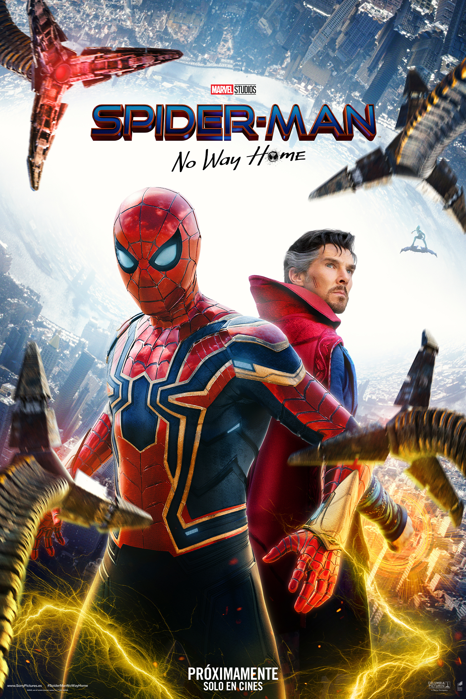

TRAILERS
|
 Ya en cines |
SinopsisPor primera vez en la historia cinematográfica de Spider-Man, nuestro héroe, vecino y amigo es desenmascarado y por tanto ya no puede separar su vida normal de los enormes riesgos que conlleva ser un Súper Héroe. Cuando pide ayuda a Doctor Strange, los riesgos pasan a ser aún más peligrosos, obligándole a descubrir lo que realmente significa ser Spider-Man. Reparto
|
DIRIGIDA PORJon Watts BASADA EN EL CÓMIC DE
|